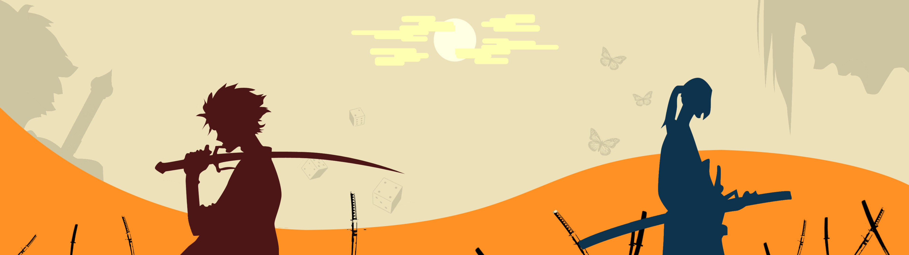

Emilio Toledo en el país del sol naciente

Algunos de los haikus mas famosos son:
- Noche sin luna. La tempestad estruja. los viejos cedros.
Matsuo Basho (1644-1694)
- Pasó el ayer, pasó también el hoy; se va la primavera.
Yosa Buson (1716-1784)
- Al Fuji subes, despacio pero subes, caracolito
Kobayashi Issa (1763-1827)
- Corté una rama y clareo mejor por la ventana
Masaoka Shiki (1867-1902)
- ¿Es un imperio esa luz que se apaga o una luciernaga?
Octavio Paz (1914-1998)
¿Qué son los haikus?
El haiku es un género poético japonés, en su forma, el haiku, es un poema breve de diecisiete sílabas, organizadas en el esquema 5/7/5 y sin rima.
Busca a través de la sencillez, la sutileza y la austeridad, capturar el instante… la emoción de un momento aparentemente banal pero lleno de significado.
Mi top 3 seria:
- Ladrón cazado:
con los bolsillos llenos
de setas frescas.
Tomas Tranströmer (1931-2015)
- tiembla el rocío
y las hojas moradas
y un colibrí
Mario Benedetti (1920-2009)
- Hecho de aire
entre pinos y rocas
brota el poema.
Jorge Luis Borges (1899-1986)